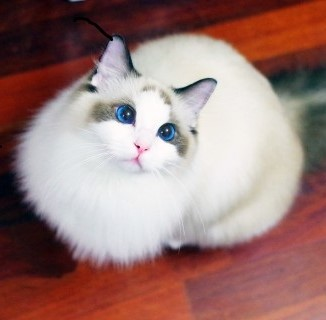

電話：(03) 4638800
地址: 桃園市 32003 中壢區遠東路 135 號
營業時間: 周一至周五 08:00 ～ 18:00
聯絡我們:


電話：(03) 4638800
地址: 桃園市 32003 中壢區遠東路 135 號
營業時間: 周一至周五 08:00 ～ 18:00
聯絡我們:

|
挪威森林貓 – Norwegian Forest Cat覺得自己是家中的一分子，無論家裡發生什麼事情，他們都喜歡參與，從吃飯、招待到訪的朋友到家庭會議。 |
|  |
布偶貓 – Ragdoll
俗名別名布娃娃貓。布偶貓的原產地是美國，又稱布拉多爾貓,是由加州的婦女安貝可(Ann Baker)培育出來的貓種。該貓是貓中體型和體重最大的一種貓。祖先為白色長毛貓與伯曼貓，於1960年開始繁育，1965年在美國獲得認可。 |

|
緬因貓 – Maine Coon
緬因貓是北美洲自然產生的最早的長毛貓品種，原產於美國東岸緬因州附近。緬因貓還有個迷人的稱號，「溫柔的巨人」。 |

|
金吉拉 – Chinchilla Cat
金吉拉(Chinchilla Cat)原產於英國，是由波斯貓經過人工培育而產生的新品種，因此在養貓界中又被稱作「人造貓」，相較於波斯貓，金吉拉的四肢較短、體型嬌小，非常靈巧可愛。 |

|
美國捲耳貓 – American Curl
美國捲耳貓(American Curl)，又稱美國反耳貓，有長毛和短毛之分，特徵是耳朵向上捲曲，披毛細膩光滑，體態纖細勻稱。1891年首次發現於美國，經過六年左右的時間培育後，很快就遍佈世界各地。他們的耳朵不是人工培育，而是遺傳基因突變而造成的唷！ |

|
安哥拉貓 – Turkey angora
安哥拉貓(Turkey angora)全名為土耳其安哥拉貓，起源於15世紀土耳其的安哥拉山脈，傳說先知穆罕默德便飼有一隻雪白的安哥拉貓，有些科學家甚至相信安哥拉貓是所有長毛貓的始祖。傳統的安哥拉貓是全白的，不過現在也培育出許多不同的毛色。 |